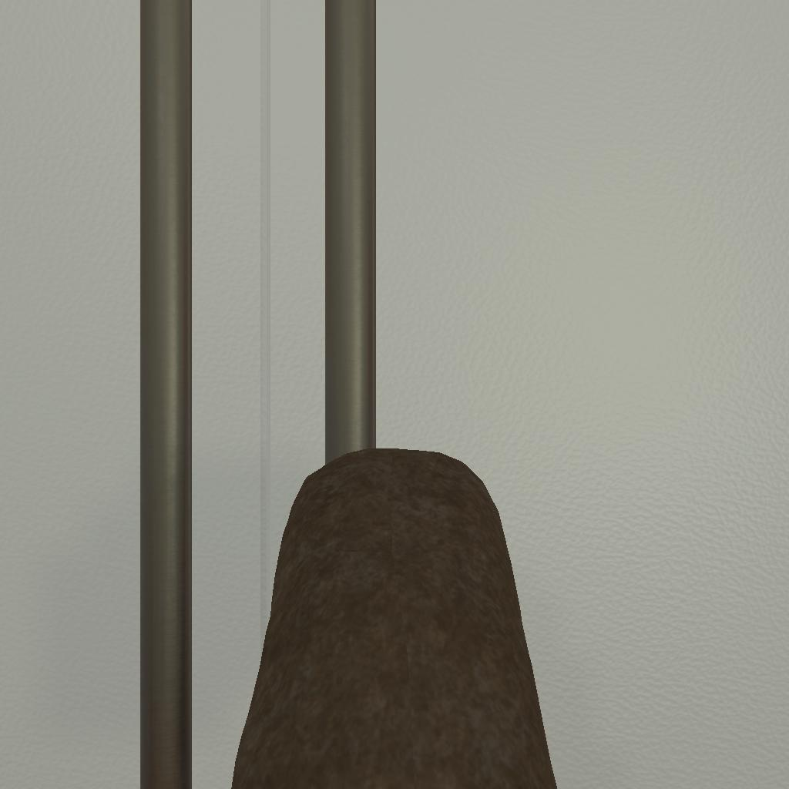

---------------------------------------------------------task: 17---------------------------------------------------------
--------------------------------------------------------------------------------------------------------------------------------------------------------------------
--------------------------------------------------------------------------------------------------------------------------------------------------------------------
Step:--------------------------------------------------------------------------16-------------------------------------------------------------------------------
----------------------------------------
VLM Prompt:
**Task**
Please perform as an embodied AI agent. Our final objective is to put a cool pan in stoveburner. Below is the plan for completing the task, the current observation, alongside historical data and admissible actions for the next step. Please determine the best action for the next step!
**Plan**
Below is a detailed step-by-step plan to complete the task.
1. Find a pan.
2. Pick up the pan.
3. Find a fridge.
4. Cool the pan with the fridge.
5. Find a stove burner.
6. Place the cooled pan on the stove burner.
**Current Observation**
Displayed is an image capturing the current position of the agent.
Objects in The Image: ['pole', 'wall']
**History Information**
Displayed are the previous observations with their corresponding actions.
State 0:
No history.
State 1:
1. Step Index in the Plan: 1
2. Objects: Kitchen Sink, Faucet, Cup, Neti Pot
3. Action: go to cabinet 1
State 2:
1. Step Index in the Plan: 1
2. Objects: Wooden Floor (no other objects visible)
3. Action: go to cabinet 2
State 3:
1. Step Index in the Plan: Unknown
2. Objects: Wooden Door, Cabinets, Drawers
3. Action: go to cabinet 4
State 4:
1. Step Index in the Plan: 1
2. Objects: Countertop, Wooden Cabinets, Microwave Oven, Tweezers, Salt Shaker, Paper Towels
3. Action: go to cabinet 3
State 5:
1. Step Index in the Plan: 1
2. Objects: Wooden Surface
3. Action: open cabinet 3
State 6:
1. Step Index in the Plan: 1
2. Objects: Wooden Floor, Wooden Walls, Cabinets
3. Action: go to cabinet 5
State 7:
1. Step Index in the Plan: 1
2. Objects: Microwave, Cabinet, Countertop, Knife, Pepper Mill, Paper Towels
3. Action: open cabinet 5
State 8:
1. Step Index in the Plan: 1
2. Objects: Countertop, Microwave, Knife, Pepper Grinder, Cabinets, Drawers
3. Action: go to cabinet 6
State 9:
1. Step Index in the Plan: 1
2. Objects: Countertop, Microwave, Knife, Paper Towels, Wooden Cabinets
3. Action: open cabinet 6
State 10:
1. Step Index in the Plan: 1
2. Objects: Microwave, Tweezers, Salt Shaker, Paper Towels
3. Action: go to cabinet 7
State 11:
1. Step Index in the Plan: 1
2. Objects: Copper Pots, Countertop
3. Action: go to countertop 1
State 12:
1. Step Index in the Plan: 1
2. Objects: Copper Pots (as pans), Countertop
3. Action: go to fridge 1
State 13:
1. Step Index in the Plan: 4
2. Objects: Copper Pots (Pans)
3. Action: go to fridge 1
State 14:
Step Index in the Plan: Not explicitly stated, but context implies it's the step to use the fridge.
Objects: Metal Bars, Wall, Top of Person's Head (irrelevant to current plan step)
Action: open fridge 1
State 15:
1. Step Index in the Plan: 4
2. Objects: Stairs, Staircase Railing, Wall
3. Action: close fridge 1
**Admissible Actions**
(1): go to cabinet 1
(2): go to cabinet 2
(3): go to cabinet 3
(4): go to countertop 1
(5): go to cabinet 4
(6): go to cabinet 5
(7): go to microwave 1
(8): go to cabinet 6
(9): go to drawer 1
(10): go to drawer 2
(11): go to drawer 3
(12): go to cabinet 7
(13): go to cabinet 8
(14): go to sink 1
(15): go to sinkbasin 1
(16): go to coffeemachine 1
(17): go to cabinet 9
(18): go to cabinet 10
(19): go to drawer 4
(20): go to cabinet 11
(21): go to stoveburner 1
(22): go to stoveburner 2
(23): go to stoveburner 3
(24): go to stoveburner 4
(25): go to cabinet 12
(26): go to toaster 1
(27): go to drawer 5
(28): go to countertop 2
(29): go to cabinet 13
(30): go to cabinet 14
(31): go to diningtable 1
(32): go to garbagecan 1
(33): go to safe 1
(34): put bread 1 in/on fridge 1
(35): cool bread 1 with fridge 1
(36): examine bread 1
**Analysis Guideline**
1. Analyze the history and current observation, and then determine our current step in the plan and our current place.
2. List all visible objects related to the task in the current observation, without summarizing any as "various items."
3. Analyze the objects in the current observation based on the history and the requirements for the current step, and then determine if we can complete the step with the current observation.
4. Analyze and decide on the most appropriate action to take.
5. Summarize the analysis using the following format: "Analysis: [The summarization of the analysis], The Most Appropriate Action: (i which is the integer.): [Selected action]"
**Notes**
1. We must complete each step of the plan in order and cannot skip steps when the previous ones are not finished.
2. For "Go to" actions listed as "go to xxx [n]", interpret this as there are n distinct actions available: "go to xxx 1", "go to xxx 2", ..., "go to xxx n". Select one specific action from these options instead of using "go to xxx [n]".
3. If receptacles such as drawers, cabinets, and so forth are closed in the current observation, we may try to open them.
4. Pay attention to synonyms and ensure clarity in the terms used.
5. We must determine and provide the single action which must be in the **Admissible Actions**.
6. If there is no history available, we are at the first step and the current place is "Unknown".
**Answer**
Please select the most suitable action by following the **Analysis Guideline**, keeping the above **Notes** in mind.
----------------------------------------
----------------------------------------
VLM Response:
Analysis: According to the history information, we have already found a pan (step 1) and the agent was instructed to cool the pan with the fridge (step 4). The agent performed an action to open the fridge (step 14) and then close it (step 15), but there is no confirmation that the pan was actually cooled in the fridge. Since the historical data does not explicitly confirm the completion of step 4, we must assume it is still pending. The current observation shows two vertical poles and a wall, with no relevant objects to the task visible. Therefore, we cannot complete the current step with the objects in the current observation. Since there is no "go to fridge" action in the admissible actions, it appears that we may need to locate the fridge again to attempt to cool the pan. However, "cool bread 1 with fridge 1" is listed, which hints that the action to cool objects with the fridge exists but is not correctly listed for the pan. Since we cannot complete step 4 based on the current observation and available actions, we need to navigate to the fridge. The plan does not include a "find the fridge" step, as it was already found previously; therefore, we need an action that may lead us back to the fridge. None of the admissible actions directly state "go to fridge," so we must choose an action that could logically bring us closer to the fridge. "Go to countertop 1" may be the most appropriate action, as countertops are typically located in the kitchen close to appliances such as a fridge.
The Most Appropriate Action: (4): go to countertop 1
----------------------------------------
----------------------------------------
>>> Refine VLM Response and Get Pure Action: go to countertop 1
----------------------------------------
-----------------------------------------------------------------
Running time: 12.152246713638306 seconds
Total Money: 0
-----------------------------------------------------------------
-----------------------------------------------------------------
Summarization Prompt:
**Context**
Analysis: Since there is no history information, we are at the first step in the plan, which is to find a statue. The current place is unknown. In the current observation, we see a floorlamp next to an armchair with a small table that has a small object on it, which could potentially be the statue we are looking for. Since the plan requires us to find a statue first and it appears there might be one on the table next to the armchair, we should investigate this object to determine if it is the statue we need.
The Most Appropriate Action: (1): go to armchair 1
**Summary**
1. Step Index in the Plan: 1
2. Objects: Floorlamp, Armchair, Small Table, Small Object (potential statue)
3. Action: go to armchair 1
**Context**
Analysis: According to the history information, we have already found a pan (step 1) and the agent was instructed to cool the pan with the fridge (step 4). The agent performed an action to open the fridge (step 14) and then close it (step 15), but there is no confirmation that the pan was actually cooled in the fridge. Since the historical data does not explicitly confirm the completion of step 4, we must assume it is still pending. The current observation shows two vertical poles and a wall, with no relevant objects to the task visible. Therefore, we cannot complete the current step with the objects in the current observation. Since there is no "go to fridge" action in the admissible actions, it appears that we may need to locate the fridge again to attempt to cool the pan. However, "cool bread 1 with fridge 1" is listed, which hints that the action to cool objects with the fridge exists but is not correctly listed for the pan. Since we cannot complete step 4 based on the current observation and available actions, we need to navigate to the fridge. The plan does not include a "find the fridge" step, as it was already found previously; therefore, we need an action that may lead us back to the fridge. None of the admissible actions directly state "go to fridge," so we must choose an action that could logically bring us closer to the fridge. "Go to countertop 1" may be the most appropriate action, as countertops are typically located in the kitchen close to appliances such as a fridge.
The Most Appropriate Action: (4): go to countertop 1
Please summarize the context by following above examples when providing the summary, and ensure that only the summary is included, without any extra explanation.
**Summary**
-----------------------------------------------------------------
-----------------------------------------------------------------
Summarization Response:
1. Step Index in the Plan: 4 (pending completion)
2. Objects: Vertical Poles, Wall (no relevant objects)
3. Action: go to countertop 1
-----------------------------------------------------------------
-----------------------------------------------------------------
Text Observation:You arrive at loc 3. On the countertop 1, you see a bread 2, a cup 1, a butterknife 1, and a fork 1.
-----------------------------------------------------------------
UNSUCCEED